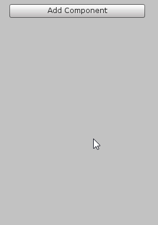
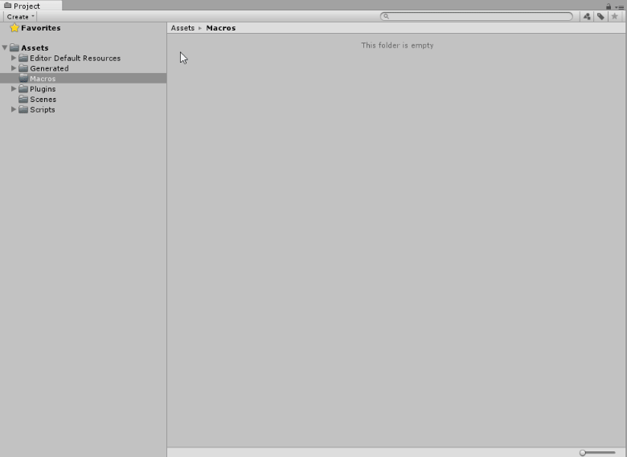

Graphs, Machines and Macros
Graphs are visual representations of logic. They're at the core of Bolt.
There are two kinds of graphs:
Flow Graphs, in which you connect individual actions and values in a specific order. That order of execution is what we call the flow. If you have used Unreal Engine before, you might find they are similar to the Blueprints visual scripting language.
- State Graphs, in which you create different states and the transitions between them. Each state acts as a little program. If you have used PlayMaker or other FSM (Finite State Machine) systems before, you're familiar with state graphs.
Together, these two kinds of graphs allow you to create any game you have in mind.
When to use each kind of graph
- You will most often use Flow Graphs. They let you execute actions at every frame or when an event (like a collision) occurs. Flow graphs have access to all the so-called "low-level" logic, like branching, loops, math, etc. They best answer the question "when this happens, what should I do, and in what order?".
- You will use State Graphs when you want to create so-called "high-level" logic, like AI behaviours, scene or level structure, or anything that requires the notion of state. For example, an enemy that has a "patrol", "chase" and "attack" states, or a door that has "locked", "unlocked", and "open" states. State Graphs best answer the question "what is my current behaviour, and when should that change?".
Each kind has its own full dedicated section in the manual, Flow Graphs and State Graphs. You should read them in this order. We will see later that you can combine the two kinds of graphs: for example, each state node in a state graph is actually a flow graph.
For now, let's just introduce some basic concepts that are shared for both kinds of graphs.
Machines
A Machine is a component that you add on a game object to execute the logic of a graph during play mode. There is one for each kind of graph: a Flow Machine and a State Machine. They are both located under the Bolt category.

You can also find them in the top level Unity menu.
Both have the same options in the inspector, so we'll just create a flow machine for this example.
You can give a title and summary to each graph to help identify them. They have no impact on functionality, but help with organization.
The Edit Graph button opens the graph of this machine in the graph window and the graph inspector. If you only have one machine on the same object, you won't need to use it, because Bolt automatically matches the graph to your selection.
Embeds vs. Macros
Let's take a look at the Source. You have two options: Embed or Macro.
| Embed | Macro | |
|---|---|---|
| Relation | The graph is embedded in the machine itself. | The graph is a macro asset that isreferenced by the machine. |
| Re-usability | You cannot re-use the graph for other machines, but it will be shared across prefab instances. | You can re-use the same macro for multiple machines, even if they're not on the same prefab. |
| Permanence | If you remove the machine component, the graph will be deleted.The graph will also be deleted if you switch the Source to Macro. | If you remove the machine component, the macro asset will still exist. The graph will not be deleted if you switch the Source to Embed. |
| Scene Reference | The graph can refer to game objects from the current scene in its graph, as long as it's not saved as a prefab. | The graph cannot refer to game objects from the current scene, because it does not "belong" to any scene. |
| Prefabs | The machine should not be used if you instantiate your prefab while in the editor. | The machine can safely be used on all prefabs. |
Macros
A Macro is a re-usable graph that can be referenced by multiple different machines that have their Source set to Macro.
If you switch the Source option of our machine to Macro, you'll see that you now have to tell the machine which macro it should use.
As you would expect, a Flow Machine requires a Flow Macro and a State Machine requires a State Macro.
To create a macro, right-click in an empty folder in your Project panel and choose Create > Bolt > (Flow / State) Macro. We recommend putting your macros in a top-level Macros folder, but that organization is entirely up to you and has no impact on functionality.

Then, you can simply drag-and-drop your new graph or use the Unity object picker to assign it to the machine.
Shared Live Update
When you change a graph in a macro, that change will apply to all objects that have that macro attached to it. No need to have a unique macro for every instance of an object, or to ever copy-paste your changes.

When to use which source
As you might have seen from the table above, a macro is generally superior to an embed - it is reusable, not tied to the object, and works safely with prefabs. However, there is a very simple rule of thumb to determine which source to use use:
- Most often, you'll use a macro. Macros are faster to load and easier to maintain if your graph will be reused across one or more objects or scene.
- For graphs that will only be used once in the current scene, you can use an embed. This will allow you to use scene references, which is very useful for GUI.
Converting the Source
At first, you might find it a bit confusing to choose whether you should use a macro or an embed graph. Don't worry: Bolt makes it simple to change your mind at any moment. It's common and normal to convert from one kind of source to the other.
From Macro to Embed
For example, if you were using a shared state macro for AI behaviour, but you then realize that this one enemy has special behaviour, you might want to convert your macro to an embed graph to modify it independently from the others.
To do so, simply click on the Convert button.
From Embed to Macro
For example, you might start working on an embed graph for movement on an enemy game object, but then realize you'd want the same logic to apply to friendly NPC's. Therefore, you'll want to convert your embed graph to a macro for re-usability.
To do so, simply click on the Convert button and choose a path and file name for the new macro. Bolt will copy all the items in your embed graph to the macro (except scene references, which are not supported in macros). The machine will then automatically switch to macro mode and reference your new graph.